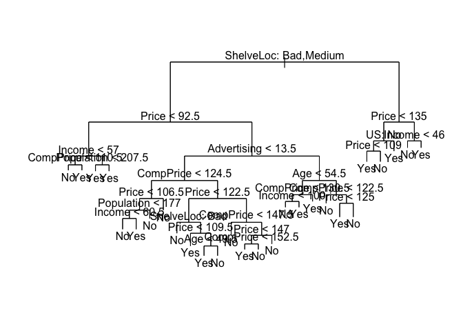
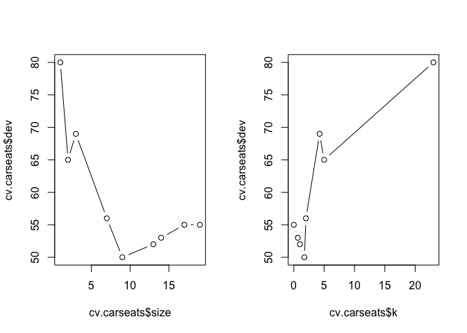
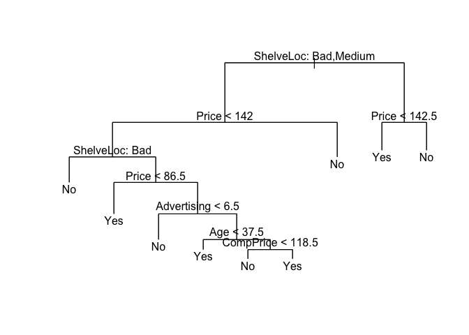
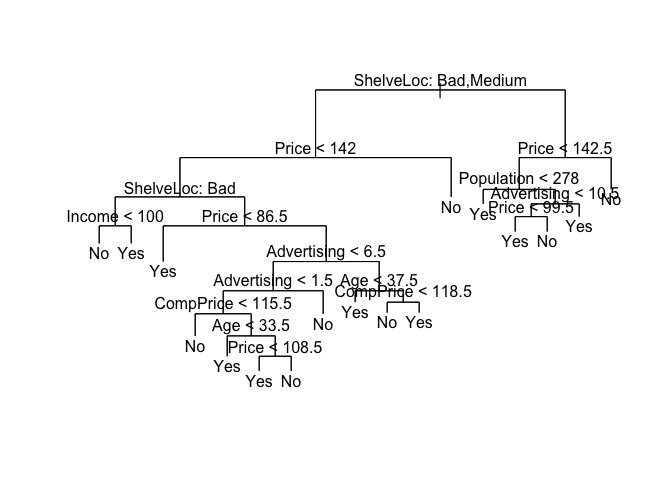
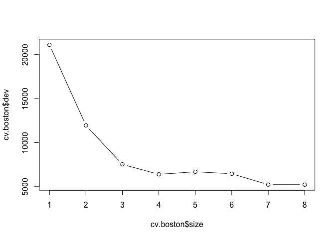
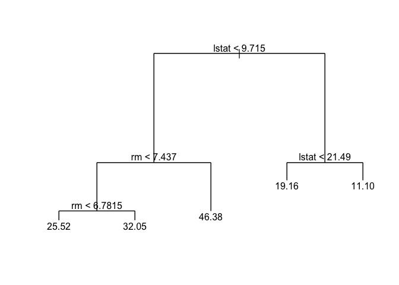
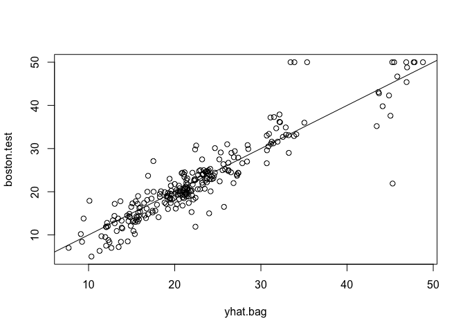
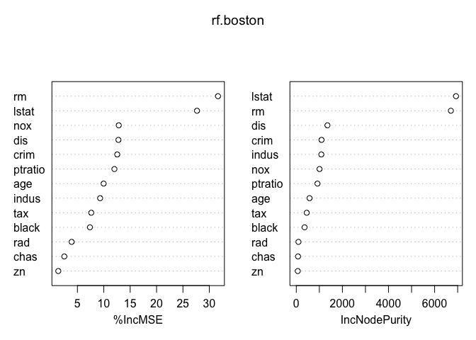
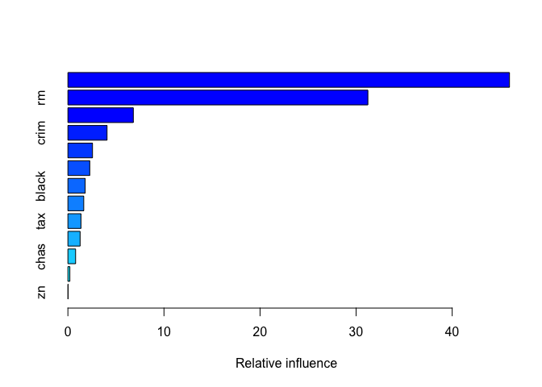
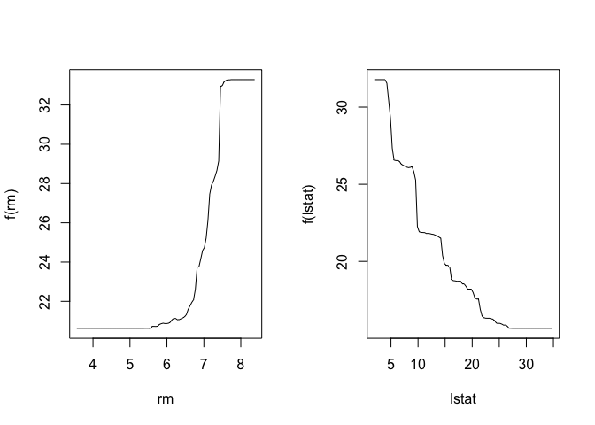

- Introduction
- 1. Chapter 2. Statistical Learning
- 2. Chapter 3. Linear Regression
- 3. Chapter 4. Classification
- 4. Chapter 5. Resampling Methods
- 5. Chapter 6. Linear Model Selection and Regularization
- 6. Chapter 7. Moving Beyond Linearity
- 7. Chapter 8. Tree-Based Methods
- 8. Chapter 9. Support Vector Machines
- 9. Chapter 10. Unsupervised Learning
- 10. References
- Published with GitBook
8.3 Lab: Decision Trees
8.3.1 Fitting Classification Trees
The tree package provides functionality for classification and regression trees.
library(tree)
Load the ISLR package and attach to the Carseats dataset. Then we convert Sales from a contiguous variable to a binary one using ifelse().
library(ISLR)
attach(Carseats)
High <- ifelse(Sales <= 8, "No", "Yes")
We then create a new data.frame by adding the newly created High variable to the Carseats data.
Carseats <- data.frame(Carseats, High)
We can fit a classification tree using tree() function.
tree.carseats <- tree(High ~ . - Sales, Carseats)
We can get a summary of the fitted model.
summary(tree.carseats)
##
## Classification tree:
## tree(formula = High ~ . - Sales, data = Carseats)
## Variables actually used in tree construction:
## [1] "ShelveLoc" "Price" "Income" "CompPrice" "Population"
## [6] "Advertising" "Age" "US"
## Number of terminal nodes: 27
## Residual mean deviance: 0.4575 = 170.7 / 373
## Misclassification error rate: 0.09 = 36 / 400
And plot the results using the plot() function.
plot(tree.carseats)
text(tree.carseats, pretty = 0)

tree.carseats
## node), split, n, deviance, yval, (yprob)
## * denotes terminal node
##
## 1) root 400 541.500 No ( 0.59000 0.41000 )
## 2) ShelveLoc: Bad,Medium 315 390.600 No ( 0.68889 0.31111 )
## 4) Price < 92.5 46 56.530 Yes ( 0.30435 0.69565 )
## 8) Income < 57 10 12.220 No ( 0.70000 0.30000 )
## 16) CompPrice < 110.5 5 0.000 No ( 1.00000 0.00000 ) *
## 17) CompPrice > 110.5 5 6.730 Yes ( 0.40000 0.60000 ) *
## 9) Income > 57 36 35.470 Yes ( 0.19444 0.80556 )
## 18) Population < 207.5 16 21.170 Yes ( 0.37500 0.62500 ) *
## 19) Population > 207.5 20 7.941 Yes ( 0.05000 0.95000 ) *
## 5) Price > 92.5 269 299.800 No ( 0.75465 0.24535 )
## 10) Advertising < 13.5 224 213.200 No ( 0.81696 0.18304 )
## 20) CompPrice < 124.5 96 44.890 No ( 0.93750 0.06250 )
## 40) Price < 106.5 38 33.150 No ( 0.84211 0.15789 )
## 80) Population < 177 12 16.300 No ( 0.58333 0.41667 )
## 160) Income < 60.5 6 0.000 No ( 1.00000 0.00000 ) *
## 161) Income > 60.5 6 5.407 Yes ( 0.16667 0.83333 ) *
## 81) Population > 177 26 8.477 No ( 0.96154 0.03846 ) *
## 41) Price > 106.5 58 0.000 No ( 1.00000 0.00000 ) *
## 21) CompPrice > 124.5 128 150.200 No ( 0.72656 0.27344 )
## 42) Price < 122.5 51 70.680 Yes ( 0.49020 0.50980 )
## 84) ShelveLoc: Bad 11 6.702 No ( 0.90909 0.09091 ) *
## 85) ShelveLoc: Medium 40 52.930 Yes ( 0.37500 0.62500 )
## 170) Price < 109.5 16 7.481 Yes ( 0.06250 0.93750 ) *
## 171) Price > 109.5 24 32.600 No ( 0.58333 0.41667 )
## 342) Age < 49.5 13 16.050 Yes ( 0.30769 0.69231 ) *
## 343) Age > 49.5 11 6.702 No ( 0.90909 0.09091 ) *
## 43) Price > 122.5 77 55.540 No ( 0.88312 0.11688 )
## 86) CompPrice < 147.5 58 17.400 No ( 0.96552 0.03448 ) *
## 87) CompPrice > 147.5 19 25.010 No ( 0.63158 0.36842 )
## 174) Price < 147 12 16.300 Yes ( 0.41667 0.58333 )
## 348) CompPrice < 152.5 7 5.742 Yes ( 0.14286 0.85714 ) *
## 349) CompPrice > 152.5 5 5.004 No ( 0.80000 0.20000 ) *
## 175) Price > 147 7 0.000 No ( 1.00000 0.00000 ) *
## 11) Advertising > 13.5 45 61.830 Yes ( 0.44444 0.55556 )
## 22) Age < 54.5 25 25.020 Yes ( 0.20000 0.80000 )
## 44) CompPrice < 130.5 14 18.250 Yes ( 0.35714 0.64286 )
## 88) Income < 100 9 12.370 No ( 0.55556 0.44444 ) *
## 89) Income > 100 5 0.000 Yes ( 0.00000 1.00000 ) *
## 45) CompPrice > 130.5 11 0.000 Yes ( 0.00000 1.00000 ) *
## 23) Age > 54.5 20 22.490 No ( 0.75000 0.25000 )
## 46) CompPrice < 122.5 10 0.000 No ( 1.00000 0.00000 ) *
## 47) CompPrice > 122.5 10 13.860 No ( 0.50000 0.50000 )
## 94) Price < 125 5 0.000 Yes ( 0.00000 1.00000 ) *
## 95) Price > 125 5 0.000 No ( 1.00000 0.00000 ) *
## 3) ShelveLoc: Good 85 90.330 Yes ( 0.22353 0.77647 )
## 6) Price < 135 68 49.260 Yes ( 0.11765 0.88235 )
## 12) US: No 17 22.070 Yes ( 0.35294 0.64706 )
## 24) Price < 109 8 0.000 Yes ( 0.00000 1.00000 ) *
## 25) Price > 109 9 11.460 No ( 0.66667 0.33333 ) *
## 13) US: Yes 51 16.880 Yes ( 0.03922 0.96078 ) *
## 7) Price > 135 17 22.070 No ( 0.64706 0.35294 )
## 14) Income < 46 6 0.000 No ( 1.00000 0.00000 ) *
## 15) Income > 46 11 15.160 Yes ( 0.45455 0.54545 ) *
The Carseats dataset has 400 observations, so let's split it into a training and test subsets using sample().
set.seed(2)
train <- sample(1:nrow(Carseats), 200)
Carseats.test <- Carseats[-train, ]
High.test <- High[-train]
tree.carseats <- tree(High ~ . - Sales, Carseats, subset = train)
tree.pred <- predict(tree.carseats, Carseats.test, type = "class")
table(tree.pred, High.test)
## High.test
## tree.pred No Yes
## No 86 27
## Yes 30 57
(86 + 57)/200
## [1] 0.715
Next we run cross-validation with cv.tree() to minimize the error rate. The dev (deviance) component in the fitted model holds the error rate at different parameter values for the number of nodes in size.
set.seed(3)
cv.carseats <- cv.tree(tree.carseats, FUN = prune.misclass)
names(cv.carseats)
## [1] "size" "dev" "k" "method"
Let's plot the result.
par(mfrow = c(1, 2))
plot(cv.carseats$size, cv.carseats$dev, type = "b")
plot(cv.carseats$k, cv.carseats$dev, type = "b")

And prune the tree with using the optimum number of nodes obtained from cross-validation above. We can prune the tree with prune.misclass() which is simply a short-hand for calling prune.tree() with method = misclass.
prune.carseats <- prune.misclass(tree.carseats, best = 9)
plot(prune.carseats)
text(prune.carseats, pretty = 0)

Now, we can use predict() to see how the model performs on test data.
tree.pred <- predict(prune.carseats, Carseats.test, type = "class")
table(tree.pred, High.test)
## High.test
## tree.pred No Yes
## No 94 24
## Yes 22 60
(94 + 60)/200
## [1] 0.77
We can see the effects of the number of node on the classification error rate by changing the best argument.
prune.carseats <- prune.misclass(tree.carseats, best = 15)
plot(prune.carseats)
text(prune.carseats, pretty = 0)

tree.pred <- predict(prune.carseats, Carseats.test, type = "class")
table(tree.pred, High.test)
## High.test
## tree.pred No Yes
## No 86 22
## Yes 30 62
(86 + 62)/200
## [1] 0.74
8.3.2 Fitting Regression Trees
The tree package also provides functionality to fit regression trees. Let's load the MASS package and fit a regression tree on the Boston housing values dataset.
library(MASS)
set.seed(1)
train <- sample(1:nrow(Boston), nrow(Boston)/2)
tree.boston <- tree(medv ~ ., Boston, subset = train)
summary(tree.boston)
##
## Regression tree:
## tree(formula = medv ~ ., data = Boston, subset = train)
## Variables actually used in tree construction:
## [1] "lstat" "rm" "dis"
## Number of terminal nodes: 8
## Residual mean deviance: 12.65 = 3099 / 245
## Distribution of residuals:
## Min. 1st Qu. Median Mean 3rd Qu. Max.
## -14.10000 -2.04200 -0.05357 0.00000 1.96000 12.60000
Next we plot the results.
plot(tree.boston)
text(tree.boston, pretty = 0)

Just like classification trees, we can run cross-validation on regression trees with the cv.tree() function.
cv.boston <- cv.tree(tree.boston)
plot(cv.boston$size, cv.boston$dev, type = "b")

We use prune.tree() to prune regression trees and plot the results.
prune.boston <- prune.tree(tree.boston, best = 5)
plot(prune.boston)
text(prune.boston, pretty = 0)

Now we can the check error rate on the test data set uring using predict() and calculating the mean square error.
yhat <- predict(tree.boston, newdata = Boston[-train, ])
boston.test <- Boston[-train, "medv"]
plot(yhat, boston.test)
abline(0, 1)

mean((yhat - boston.test)^2)
## [1] 25.04559
8.3.3 Bagging and Random Forests
We will use the randomForest package to apply bagging and random forest on Boston housing values datasets. Install the package using install.packages() if necessary and load it with the library().
We apply bagging the to Boston datasets using the randomForest() function.
library(randomForest)
## randomForest 4.6-10
## Type rfNews() to see new features/changes/bug fixes.
set.seed(1)
bag.boston <- randomForest(medv ~ ., data = Boston, subset = train, mtry = 13, importance = TRUE)
bag.boston
##
## Call:
## randomForest(formula = medv ~ ., data = Boston, mtry = 13, importance = TRUE, subset = train)
## Type of random forest: regression
## Number of trees: 500
## No. of variables tried at each split: 13
##
## Mean of squared residuals: 11.02509
## % Var explained: 86.65
Next, we look at how well the model fits test data.
yhat.bag <- predict(bag.boston, newdata = Boston[-train, ])
plot(yhat.bag, boston.test)
abline(0, 1)

mean((yhat.bag - boston.test)^2)
## [1] 13.47349
We can change the number of trees using the ntree argument to the randomForest() function.
bag.boston <- randomForest(medv ~ ., data = Boston, subset = train, mtry = 13, ntree = 25)
yhat.bag <- predict(bag.boston, newdata = Boston[-train, ])
mean((yhat.bag - boston.test)^2)
## [1] 13.43068
We can also change the number of variables sampled as candidates by the random forest algorithm using the mtry argument. We used all 13 variables above, but let's use mtry = 6 now.
set.seed(1)
rf.boston <- randomForest(medv ~ ., data = Boston, subset = train, mtry = 6, importance = TRUE)
yhat.rf <- predict(rf.boston, newdata = Boston[-train, ])
mean((yhat.rf - boston.test)^2)
## [1] 11.48022
We can look at the variable importance measure using the importance() function.
importance(rf.boston)
## %IncMSE IncNodePurity
## crim 12.547772 1094.65382
## zn 1.375489 64.40060
## indus 9.304258 1086.09103
## chas 2.518766 76.36804
## nox 12.835614 1008.73703
## rm 31.646147 6705.02638
## age 9.970243 575.13702
## dis 12.774430 1351.01978
## rad 3.911852 93.78200
## tax 7.624043 453.19472
## ptratio 12.008194 919.06760
## black 7.376024 358.96935
## lstat 27.666896 6927.98475
We can plot the variable importance measure for visual inspection using varImpPlot().
varImpPlot(rf.boston)

8.3.4 Boosting
In the final exercise, we look at applying boosting to the same Boston housing values dataset with the gbm package.
library(gbm)
## Loading required package: survival
## Loading required package: lattice
## Loading required package: splines
## Loading required package: parallel
## Loaded gbm 2.1.1
set.seed(1)
boost.boston <- gbm(medv ~ ., data = Boston[train, ], distribution = "gaussian", n.trees = 5000, interaction.depth = 4)
We can use summary() to display the relative influence for each variable and plot the results.
summary(boost.boston)

## var rel.inf
## lstat lstat 45.9627334
## rm rm 31.2238187
## dis dis 6.8087398
## crim crim 4.0743784
## nox nox 2.5605001
## ptratio ptratio 2.2748652
## black black 1.7971159
## age age 1.6488532
## tax tax 1.3595005
## indus indus 1.2705924
## chas chas 0.8014323
## rad rad 0.2026619
## zn zn 0.0148083
Based on the relative influence obtained above, we can plot the marginal effects of the most influential variables using partial dependence plots.
par(mfrow = c(1, 2))
plot(boost.boston, i = "rm")
plot(boost.boston, i = "lstat")

We the use predict() to see how the model performs on the test data and calculate the mean squared error (MSE).
yhat.boost <- predict(boost.boston, newdata = Boston[-train, ], n.trees = 5000)
mean((yhat.boost - boston.test)^2)
## [1] 11.84434
We can alter the shrinkage parameters to the boosting algorithm and compare the MSE to the previous results.
boost.boston <- gbm(medv ~ ., data = Boston[train, ], distribution = "gaussian", n.trees = 5000, interaction.depth = 4, shrinkage = 0.2, verbose = F)
yhat.boost <- predict(boost.boston, newdata = Boston[-train, ], n.trees = 5000)
mean((yhat.boost - boston.test)^2)
## [1] 11.51109